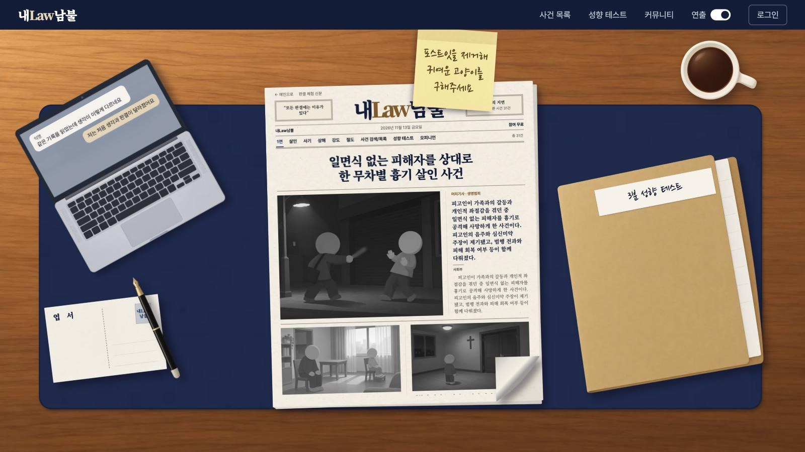

내Law남불
- 무엇
- 실제 판결문 한 건을 AI 판결과 체험 대본으로 바꿔, 사용자가 직접 판결해 보게 하는 판결 체험 서비스입니다.
- 언제
- 9월 ~ 11월 (6주), 4인
- 맡은 일
- 판결문이 공개되기까지의 파이프라인 설계와 자동 실행

조명과 스크롤 연출 없이 같은 내용을 글로 읽으려면 텍스트 판(마크다운)을 여세요.
커서를 움직이면 조명이 따라갑니다. 내리면 다음 큐로 넘어갑니다.
공연예술을 하면서 익힌 습관이 개발에서는 이렇게 작용했습니다.
판결 체험 서비스 · 9월 ~ 11월 (6주) · 4인
실제 판결문 한 건을 AI 판결과 체험 대본으로 바꿔, 사용자가 직접 판결해 보게 하는 서비스입니다.
맡은 부분은 판결문 가공부터 AI 판결 생성까지의 파이프라인, 백엔드 API 일부, 프론트엔드 전반을 담당했습니다.
손으로 넘기던 열 단계를 한 명령으로 잇는 구조를 설계했습니다. 단계마다 스스로 검증하고, 체크포인트를 남겨 중단한 곳부터 이어 갑니다.
판결문을 가리고 사건과 판단 요소를 뽑습니다.
1 extract · 실제 결과, 21건 중 1건title: 결혼을 전제로 교제하던 관계에서 발생한 반복적 차용금 사기 crimeType: FRAUD · 사기 factors: (12개 중) 1 결혼을 전제로 교제하던 피해자에게 재산을 보유한 것처럼 행세하고 돈을 받았다. 3 피고인은 별다른 수입원이나 재산이 없어 변제할 의사나 능력이 없었다.
실제 판결을 비공개로 따로 정리합니다. 판결 생성에는 넣지 않습니다.
2 court · 실제 결과, 21건 중 1건penaltyType: PRISON prisonMonths: 8 summary: 인적 신뢰 관계를 악용한 사기와 피해 미회복, 전력 및 잠적을 무겁게 고려한 판결
AI가 이 사건을 이미 아는지 열 번 물어 판정합니다.
응답을 분류해 비율로 봅니다. KNOWS가 1건이라도 있거나 EXACT가 50% 이상이면 오염으로 봅니다.
3 contamination · 형식 예시응답 분류: KNOWS · EXACT · CLOSE · SAME_TYPE · FAR · INVALID 묶음 판정: CLEAN · SUSPECT · INSUFFICIENT · CONTAMINATED
pgvector로 유사 판례를 찾고, 같은 사건은 뺍니다.
4 rag · 형식 예시보고에 남기는 것: 양형기준 버전 이름 · 기준 종류 · 판례 id · 점수 남기지 않는 것: 사건번호 · 기준일 · 판례 본문
같은 프롬프트로 세 회차를 쓰고 형식을 검증합니다. 오류가 있으면 다시 만듭니다.
5 generate · 실제 결과, 21건 중 1건model: openai:gpt-5.6-luna runs: 3 (유효 3, 재시도 0) penaltyType: PRISON prisonMonths: 18 summary: 신뢰 이용과 반복 편취 및 미흡한 피해 회복을 무겁게 본 판단
요소 방향 일치와 판결 이유 유사도로, 다른 회차와 가장 가까운 회차를 고릅니다.
6 select · 실제 결과, 21건 중 1건strategy: consensus reason: 판단 요소 다수 의견 일치 12/12 (후보 3개 중 최고) score: 12 warnings: 0
같은 요소를 다섯 번 투표해 최다표를 씁니다. 과반이 아니면 사람이 확인합니다.
7 axis · 추출기 값(실제)과 투표 형식(코드 문서)summaryTag: 연인 관계 신뢰 이용
valueAxis: PRINCIPLE_RELATION
{"runs": 5, "counts": {"FAULT_STANDARD": 3, "NONE": 2}, "needsReview": false}분위기, 쟁점, 민감 여부를 분류합니다.
8 classify · 실제 결과, 21건 중 1건mood: betrayal issue: admitted victim: unknown sensitiveFlags: [] needsReview: []
분류에 맞는 블록을 조립하고, 어긋난 블록만 다시 만듭니다.
오류는 그 줄만 고쳐 쓰고, 그래도 남으면 해당 단위를 한 번 다시 만듭니다. 끝내 남으면 공개를 막고 관리자가 검수합니다.
9 script · 실제 결과, 21건 중 1건model: openai:gpt-5.6-luna count: 9 · failed: 0 publishable: true reviewErrors: 0 · reviewWarnings: 1
비공개로 적재합니다. 아직 사용자에게 보이지 않습니다.
10 load · 형식 예시, 로컬 DB 적재 결과legal_case 상태: DRAFT → 관리자 검수 뒤 PUBLISHED 로컬 DB 적재(11/02): 사건 21 · 대본 21 · 블록 105 · 기사 21 · 판결 42
대기 · 관리자 승인
관리자 승인 없이는 어떤 사건도 공개되지 않습니다.
스크롤이 GO입니다
1막 · 내Law남불
기능을 쓰는 순간보다 쓰고 난 뒤에 남는 것을 기준으로 설계하려 합니다.
© 2026 김해송